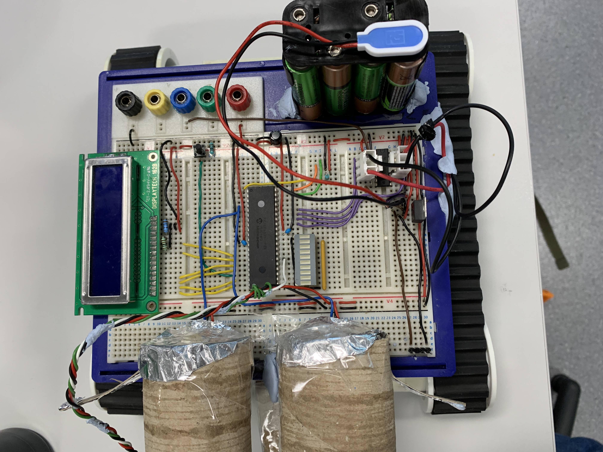
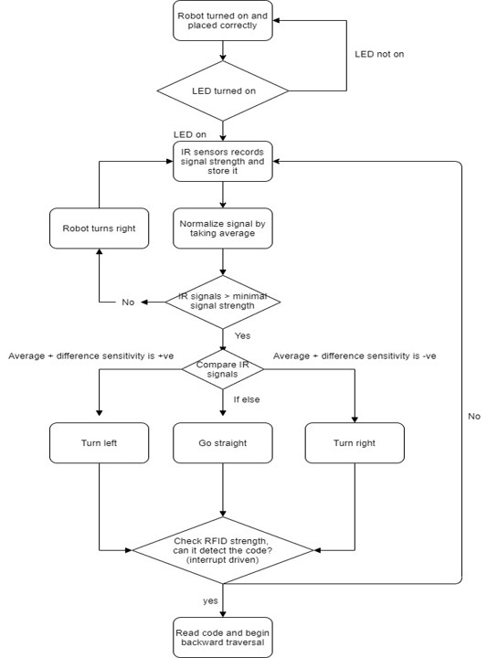

UAV for bomb disposal
Programming and designing systems with mechatronics will inevitably require the usage of simple microcontrollers (perhaps in cascade), in order to achieve a goal. Under real world applications, engineers are unlikely to have access to a wrapped and "easy to use" interface like the one found in Arduinos and Raspberry pi, but rather something that is much more fundamental and spatially compact, such as a PIC18F4331 chip. Hence, as part of my path to becoming a roboticist and a mechatronics engineer, I found it imperative to understand such systems and be able to use them efficiently. This was my motivation for selecting the Embedded C for Microcontrollers course as part of my third year of studies.
Throughout this challenging course, I worked with my partner to solve practical problems encountered as engineers. Not only was I able to get hands on experience with a large selection of sensors like IR sensor, RFID, L239N and many more, but I was also introduced to bit registers, microcontroller architecture, serial communication and memory optimization, which are concepts that are fundamental to software - hardware integration.
For the course's final project, I worked in a team of two and built an autonomous and portable UAV that is able to scan and detect an IR irradiant source, follow the signal, and retrieve RFID information from the source using serial communication and a reader. This project was designed to simulate a scenario where a suspicious device (such as an explosive) with a remote arm and disarm ability was deployed, and a robot solution needs to be developed in order to safely disable it. The following flowchart illustrates the algorithm that was implemented into the "path finder":
In essence, the robot begins by spinning on its spot and proceeds to detect any incomming signals. Upon signal detection, the robot records the signal, then normalizes it in order to eliminate any noise caused by IR signals reflecting off surfaces. Thereafter, the robot continues to check for the IR signal from the beacon, then decides for its best course of action, depending on the relative signals received on its two IR sensors. Once the robot reaches the target, it proceeds to scan the RFID tag at the source, and begins a backward traversal process, where it will eventually reach the same position as before it set off for the journey.